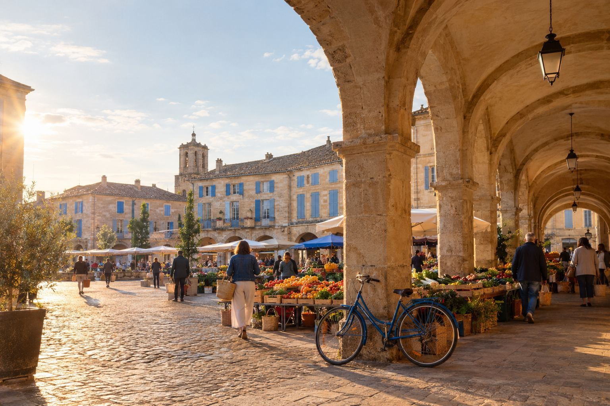
Une candidate du quotidien, sans étiquette : des factures allégées, une ville apaisée, des trajets simples.
Camille Ferrand pour Vallenoire
Trois changements concrets
Et une mairie qui rend des comptes. Chaque mesure dit qui en profite, avec quel levier et pour quand.
-
Moins de dépenses
Le taux communal de taxe foncière gelé, la cantine au quotient familial et un achat groupé d’énergie ouvert à tous. Les prix de l’énergie ont pris 16,7 % en un an (Insee, août 2026 (nouvel onglet)).
Le pouvoir d’achat en 8 mesures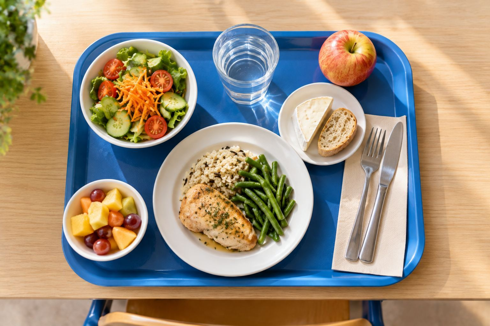
-
Plus de tranquillité
Des agents à pied le soir et le week-end, des médiateurs de rue, un référent par quartier et un éclairage refait dans les rues sombres.
La tranquillité en 6 mesures -
Des trajets plus simples
Des rues fermées aux voitures devant les écoles, des pistes cyclables continues et un transport à la demande pour les aînés, hameaux compris.
La mobilité en 7 mesures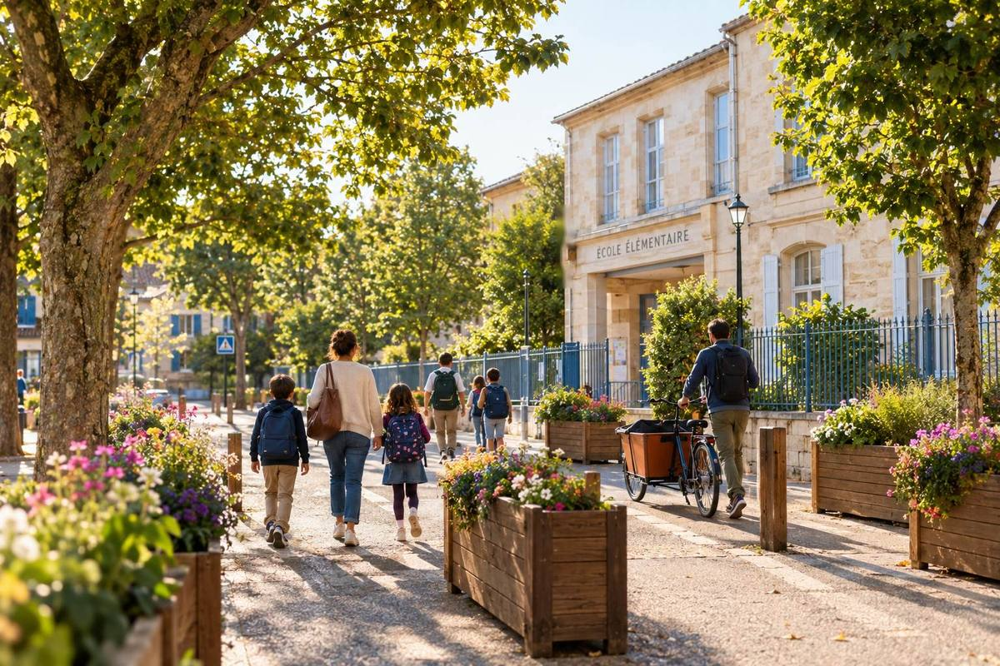
-
Des comptes rendus à tous
Le budget publié chaque année en une page, un bilan public à mi-mandat et une permanence par mois dans chacun des six quartiers.
La méthode en 3 mesures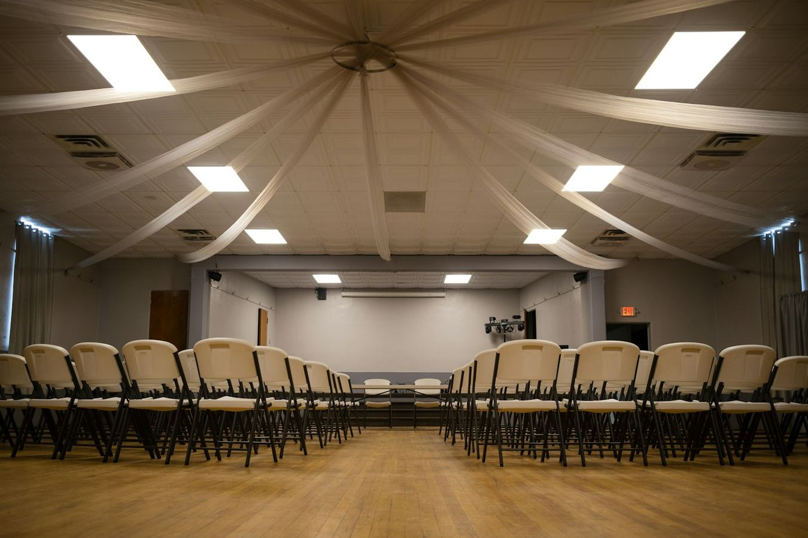
Besoin de phrases plus simples ? Lire le programme en facile à lire et à comprendre.
Vérifiable, date par date
-
Dès le premier budget
- Taxe foncière : taux communal gelé
- Stationnement gratuit 1 heure en centre-ville
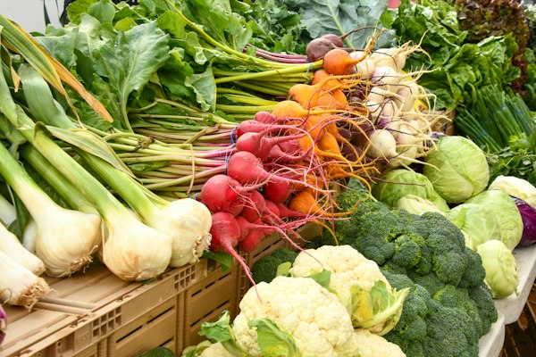
-
Dans les six premiers mois
- Un référent tranquillité par quartier
- Un problème signalé, une réponse sous 7 jours
- Guichet « Toutes vos aides »
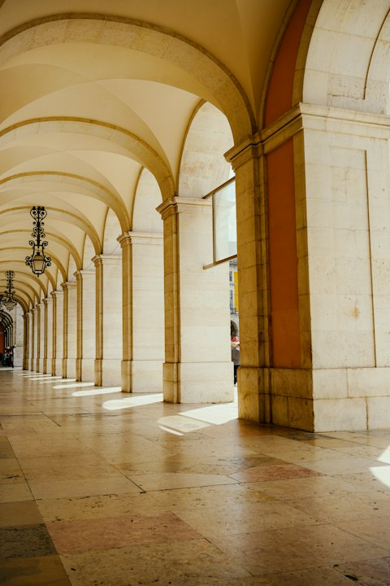
-
À la première rentrée
- Cantine et périscolaire au quotient familial
- Rues aux écoles
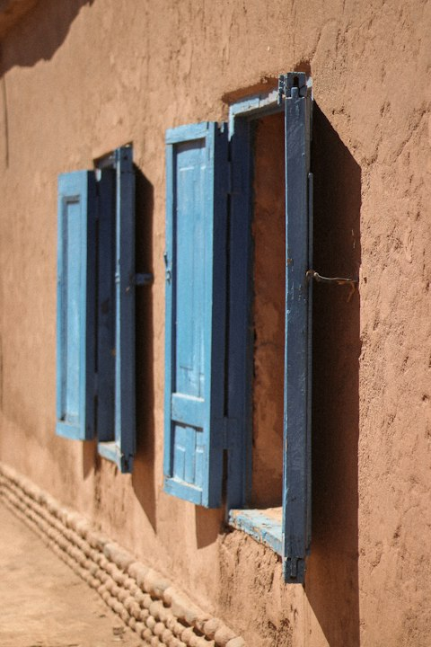
-
Au cours de la première année
- Une mutuelle communale négociée
- Achat groupé d’électricité et de gaz
- Police municipale de proximité
- Transport à la demande pour les aînés
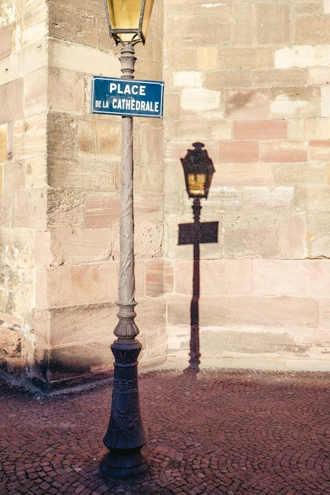
-
Chaque année
- Le budget publié chaque année, en une page
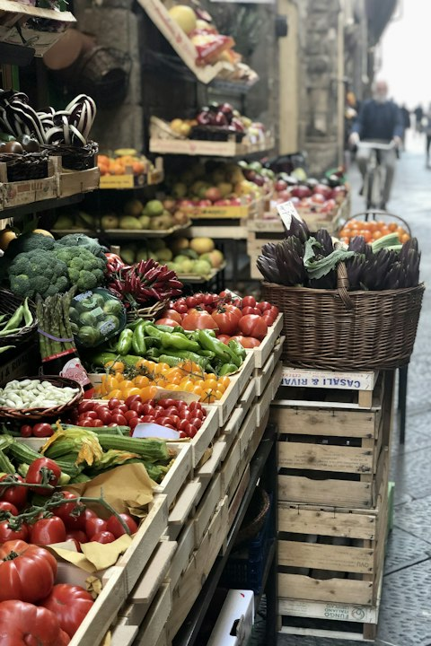
-
À mi-mandat
- Un bilan public à mi-mandat
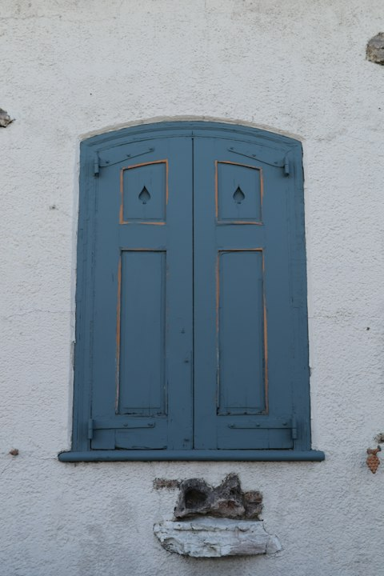
-
Tout au long du mandat
- Rénovation énergétique des bâtiments communaux
- Éclairage LED des rues peu éclairées
- Un plan vélo continu et sécurisé
- Végétaliser les cours d’école et les rues les plus chaudes
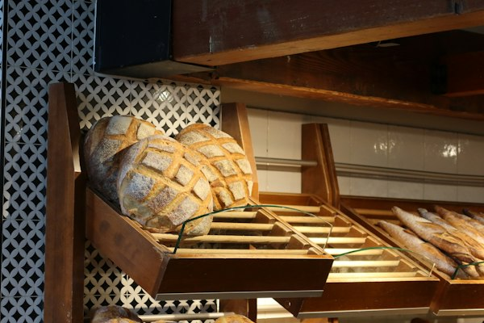
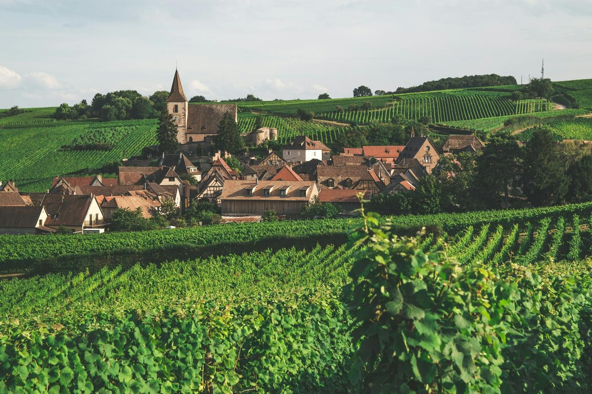
Dans votre quartier
Centre bastide
Des commerces vides, des trottoirs étroits, un centre calme le soir.
- Stationnement gratuit 1 heure en centre-villeDès le premier budget
- Police municipale de proximitéPremière année
- Éclairage LED des rues peu éclairéesTout le mandat
- Trottoirs praticables et bancs réguliersProgramme annuel
Les Quais
L’éclairage des berges, le stationnement.
- Éclairage LED des rues peu éclairéesTout le mandat
- Un référent tranquillité par quartierSix premiers mois
- Parkings vélos sécurisés et aires de covoiturageDeux premières années
Les Coteaux
La taxe foncière, la cantine, les trajets.
- Taxe foncière : taux communal geléDès le premier budget
- Cantine et périscolaire au quotient familialRentrée suivant l’élection
- Achat groupé d’électricité et de gazPremière année
- Un plan vélo continu et sécuriséTout le mandat
Le Pradet
Le pouvoir d’achat, des bus trop rares.
- Cantine et périscolaire au quotient familialRentrée suivant l’élection
- Guichet « Toutes vos aides »Six premiers mois
- Pass jeunes sport et culturePremière année
- Des bus le soir et le week-endÀ négocier avec l’agglomération
- Médiateurs de ruePremière année
Gare Saint-Jean
Une gare peu fréquentée le soir, des parkings à vélos.
- Police municipale de proximitéPremière année
- Éclairage LED des rues peu éclairéesTout le mandat
- Parkings vélos sécurisés et aires de covoiturageDeux premières années
Hameaux viticoles
L’isolement, le transport.
- Transport à la demande pour les aînésPremière année
- Une mutuelle communale négociéePremière année
- Guichet « Toutes vos aides »Six premiers mois
Qui est Camille Ferrand
47 ans, géomètre de formation. Depuis 2014, elle organise le transport scolaire et à la demande de l’agglomération : 40 lignes, 1 800 élèves chaque matin. Elle vit aux Quais depuis 2009. C’est sa première candidature. Lire sa biographie
Chaque euro compte dans une famille. La mairie doit alléger ce qui dépend d’elle : la cantine, la taxe foncière.
- Âge
- 47 ans
- Métier
- Géomètre
- Quartier
- Les Quais
- Engagement
- Club d’aviron
Ce qui guide Camille Ferrand : protéger, écouter, rassembler
L’équipe à réunir
30 : bénévoles pour tenir un stand dans chacun des six quartiers jusqu’au vote.
12 personnes ont déjà rejoint l’équipe.
2 h par semaine suffisent, sans adhérer à un parti.
Se voir, puis voter
Les prochains rendez-vous
- Chaque samedi de 9 h à 12 h, stand de campagne au marché sous les arcades.
Le jour du vote
Date à confirmer
Pour voter, il faut être inscrit sur les listes avant le 6e vendredi avant le scrutin. Absent ce jour-là ? Une procuration se fait en ligne en quelques minutes.
Préparer mon voteDeux heures par semaine
Assez pour changer votre quartier : rejoignez l’équipe de Camille.
Aucune expérience demandée. Une question avant de vous lancer ? Écrivez-nous, l’équipe répond sous 48 heures.